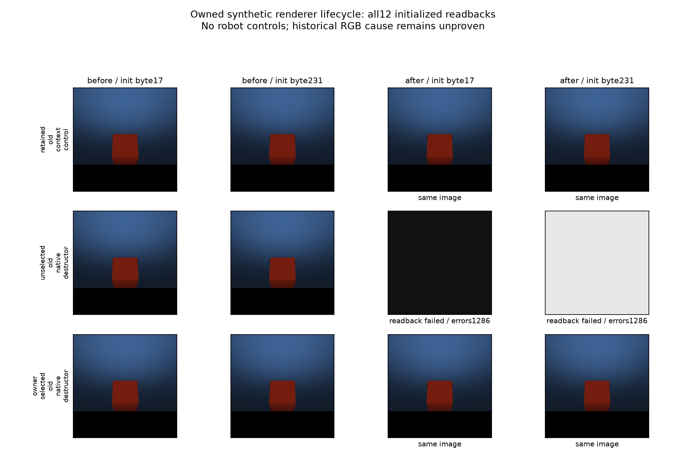

具身智能 · 经验迁移 · 公开研究记录
换一个任务，
旧经验还能帮忙吗？
在权重冻结的机器人策略中，把任务记忆与执行条件拆开，追踪经验从输入、压缩到检索和行动的每一步。
经验的去向SOURCE → QUERY
概念示意 · 神经参数冻结，研究者干预初始记忆。
0已完成正式 query尚未授予物理与信息资格
2固定任务CloseToasterOvenDoor / OpenStandMixerHead
4核心反事实条件任务匹配 × 执行增益匹配
48计划 smoke queries4 worlds × 12 条件 · 未运行
01 / 研究问题
经验里，究竟是什么在迁移？
任务外观、执行响应、状态延续与额外尝试很容易混在一起。方案通过配对的来源条件，审计它们各自的作用边界。
C1初始经验的条件效应
在完整 reset 和相同当前任务下，来源执行增益是否匹配，会怎样改变同一冻结策略的闭环表现？
C2信息利用与误用的边界
信息是否进入压缩表示、被检索并影响行动？用合法对照和同观察校准，限制解释，而不把日志当作因果机制证明。
02 / 反事实设计
同一个 query，四种旧经历。
所有组共享名义标定 R₀。分别改变来源任务与执行增益，保留真实来源身份，再恢复到当前 query 的初始记忆。
增益不匹配增益匹配
任务匹配
任务不匹配
点击条件查看其含义。这里展示实验设计，尚无成功率结果。
所选条件H11
Δphys(T=1) = H11 − H10
预定主比较：任务匹配时，增益匹配带来的差异。按独立 query world 配对；不挑选最大差异。
03 / 执行协议
先取得资格，再统计迁移。
正式实验有固定的信息权限、预算和停止规则。调试证据不会自动解锁正式评估。
完整路线：每个 world 的 12 个条件| 条件族 | 数量 | 初始 PIM | 额外读取 |
|---|
03 / 证据记录
保留结果，也保留失败。
以下是开发诊断与资格检查，不是正式任务成功率。查看每条记录的范围、观察和解释边界。
没有符合条件的记录。
相同场景，不同上下文释放方式。

完整保留三个合成分支、十二个读回数组。中间失败分支保留初始化填充值；其余对照图像逐字节一致。仅证明最小释放机制，不证明历史 RoboCasa 图像损坏原因。
核验项数只描述记录一致性，不代表独立样本数或机器人成功次数。审查为继续使用的同系列模型，未取得全新独立审查资格。
04 / 进展与下一步
从能运行，到能解释。
用明确的门槛串起实验。运行成功、观测有效、信息可辨识和任务收益是不同的结论。
参考与来源
放在已有工作的坐标里。
研究背景、基础代码和页面形式的参考。外部项目的结果不作为本项目的实验结果。
进展数据加载失败。请通过 HTTP 预览页面并检查 data/progress.json。